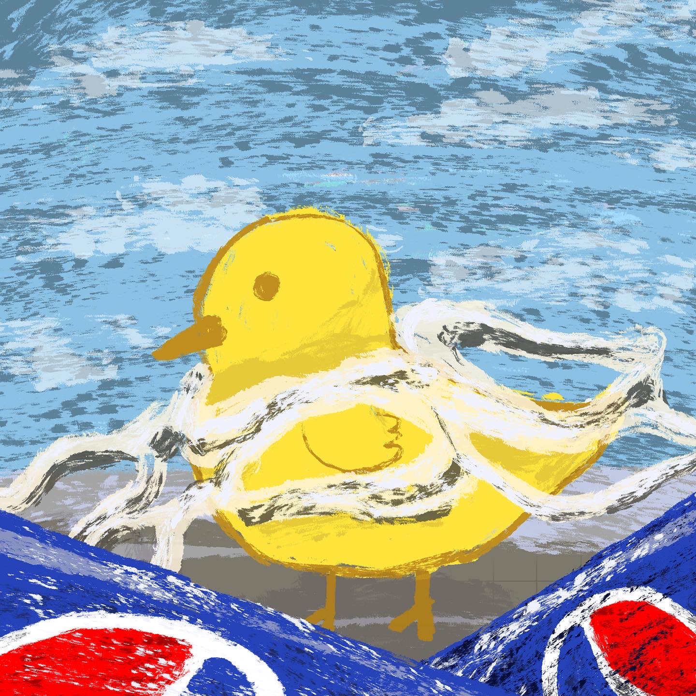

Read all about it!
Expanded Preface
Some may ask me why and how I’ve reached this far in documenting my trash. At first, it seemed like a simple exercise. But over time, it has evolved into something much more profound. This project has given me a unique window into my habits, revealing how much I tend to accumulate and how often I overlook the actual cost of the things I buy. As I photograph and reflect on the items I discard each week, I’m confronted with the stories behind them. Why did I acquire this? How did it serve me? And why am I letting it go now? Especially after reading about Sarah Newman's thoughts and work I have been thinking more in depth on my own perception. These questions have led me to think more critically about my choices, not just as a consumer but as a part of a larger ecosystem.

Like imagine you were a sad polar bear on a piece of ice just because people did not try to be mindful or concious of their actions and the larger picture of the world around us. Learn more about polar bears!
By sharing this journey, I hope to do more than just document my trash. I
want to have conversations about sustainability, mindfulness, and the
often-overlooked value of the things we discard. It’s easy to think of
trash as something that disappears once it’s out of sight, but every item
has a history and a future.
Whether it ends up in a landfill, a recycling
center, or a secondhand store, its journey doesn’t end when we let it go.
This project has become a way for me to take responsibility for my role in
that journey. It’s also a reminder that small, intentional changes can add
up over time. By reflecting on what I throw away, I’m learning to make
better choices about what I bring into my life in the first place.
Some other perspectives around
Another perspective that ties with my project is that of Brian Thill. Thill explores the multifaceted nature of waste, emphasizing that trash is a byproduct of consumption and a reflection of personal and societal values. Thill’s insights help contextualize these tendencies, illustrating how we form attachments to objects even as we prepare to discard them. His exploration of digital waste provides insight on how different forms of garbage tell stories about our habits, priorities, and the passage of time. Instead of viewing all waste as inherently harmful, it suggests that it can hold meaning, serving as a record of our lives. This perspective furthers the idea that documenting my trash is not merely about what is thrown away but about understanding the more profound implications of my consumption and disposal patterns. An interview with Brian Thill can be found here.
Although my project contains elements of raising awareness about waste, it is primarily an introspective and artistic endeavor. My focus is not on the broad environmental activism but on self-reflection. Diving into the more profound implications of my interactions with objects, the reasoning behind my purchases, consumption, and disposal. The personal aspect of this project is central to its purpose, prioritizing an exploration of my behaviors rather than directing attention outward.
In this regard, my work aligns with the ideas of artist Vik Muniz, whose projects explore the relationship between objects, memory, and value. By photographing and analyzing the things I throw away, I am not merely cataloging waste; I am constructing a record of my habits, choices, and cultural or personal significance by framing discarded objects as artifacts of my personal history. I encourage both myself and others to engage in a more critical examination of what we consume and discard. Just as Muniz’s work encourages viewers to see beauty and value in the overlooked, I hope my project prompts others to question their own consumption habits and consider the broader implications of waste.
Exploring the potential of waste
One of the most significant waste products of the twentieth century was
plastic. This article dives into how plastic is used in asphalt mix. The
New York Department of Transportation and Rutgers University are observing
the performance of two roads in Staten Island that are using this plastic
waste. This is a great way to see how something that is considered waste
and trash is a potentially helpful resource that allows for it to be used
beyond just being a single-use product. While this is just one potential
viable renewed usage of the waste, they are still in the research phase to
ensure there are no issues with the potential of microplastics being
present.

I found this online project called TerraCycle that promotes the
idea of eliminating the concept of waste. They focus on partnering with
brands to create free recycling programs, and they promote different items
and recycling programs. While this project does not focus on the concept
of trash and waste from a different perspective, it dives into the steps
to help make waste management more readily available for everyone.
Conclusion
Ultimately, my project serves as a form of personal introspection. I am
constructing a narrative about consumption, memory, and responsibility
through documentation and reflection. Whether through art, environmental
activism, or technological innovation, examining our relationship with
discarded materials offers valuable insights into both individual and
collective behaviors.
The numerous possibilities currently being developed
in hopes of reducing and recontextualizing how waste is more than just
waste is being created worldwide. Many places are trying to address the
overconsumption issue of the modern-day society, and my project does not
follow the same type of trying to reduce these issues. In my own way, I
reflect upon my habits and try to improve. And by sharing these
reflections, I hope to inspire others to do the same.
Read more...plastic mix